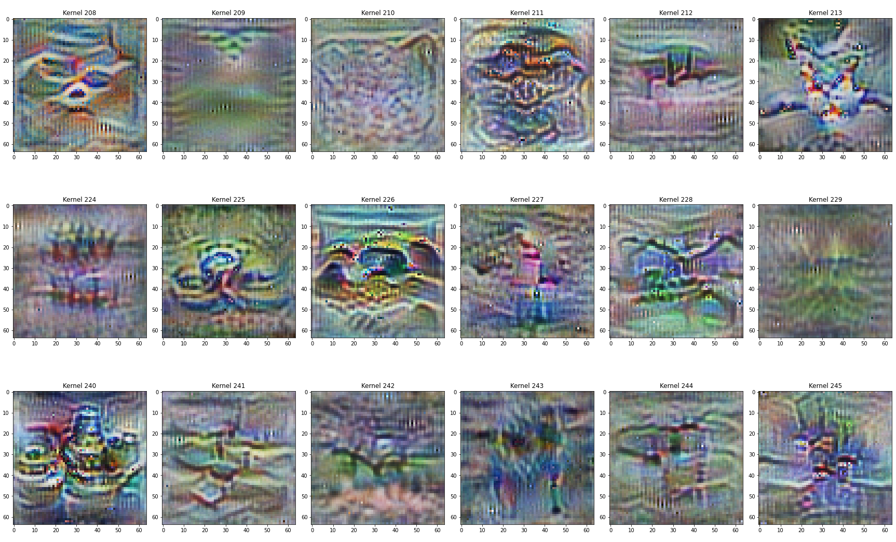

Demo_FV
Demo_FV
This is a demo for visualizing the features of a Neuron Network
Refer to https://distill.pub/2017/feature-visualization/ for more details
To run this demo from scratch, you need first generate a BadNet attack result by using the following cell
! python ../../attack/badnet.py --save_folder_name blended_demo --dataset tiny
or run the following command in your terminal
python attack/badnet.py --save_folder_name badnet_demo
Step 1: Import modules and set arguments
import sys, os
import yaml
import torch
import numpy as np
import torchvision.transforms as transforms
from omnixai.explainers.vision.specific.feature_visualization.visualizer import FeatureVisualizer
sys.path.append("../")
sys.path.append("../../")
sys.path.append(os.getcwd())
from visual_utils import *
from backdoorbench.utils.aggregate_block.dataset_and_transform_generate import (
get_transform,
get_dataset_denormalization,
)
from backdoorbench.utils.aggregate_block.fix_random import fix_random
from backdoorbench.utils.aggregate_block.model_trainer_generate import generate_cls_model
from backdoorbench.utils.save_load_attack import load_attack_result
from backdoorbench.utils.defense_utils.dbd.model.utils import (
get_network_dbd,
load_state,
get_criterion,
get_optimizer,
get_scheduler,
)
from backdoorbench.utils.defense_utils.dbd.model.model import SelfModel, LinearModel
from PIL import Image
### Basic setting: args
args = get_args(True)
########## For Demo Only ##########
args.yaml_path = "../../"+args.yaml_path
args.result_file_attack = "blended_demo"
args.dataset = "tiny"
args.dataset_path = "../../data"
######## End For Demo Only ##########
with open(args.yaml_path, "r") as stream:
config = yaml.safe_load(stream)
config.update({k: v for k, v in args.__dict__.items() if v is not None})
args.__dict__ = config
args = preprocess_args(args)
fix_random(int(args.random_seed))
save_path_attack = "../..//record/" + args.result_file_attack
Step 2: Load model
# Load result
result_attack = load_attack_result(save_path_attack + "/attack_result.pt")
# Load model
model_visual = generate_cls_model(args.model, args.num_classes)
model_visual.load_state_dict(result_attack["model"])
model_visual.to(args.device)
# !!! Important to set eval mode !!!
model_visual.eval()
print(f"Load model {args.model} from {args.result_file_attack}")
WARNING:root:save_path MUST have 'record' in its abspath, and data_path in attack result MUST have 'data' in its path
loading...
Load model preactresnet18 from blended_demo
Step 3: Choose target layer
module_dict = dict(model_visual.named_modules())
target_layer = module_dict[args.target_layer_name]
print(f'Choose layer {args.target_layer_name} from model {args.model}')
# Enable training transform to enhance transform robustness
tran = get_transform(
args.dataset, *([args.input_height, args.input_width]), train=True)
for trans_t in tran.transforms:
if isinstance(trans_t, transforms.Normalize):
denormalizer = get_dataset_denormalization(trans_t)
Choose layer layer4.1.conv2 from model preactresnet18
Step 4: Optimize images to maximize each CNN kernel under regularization
optimizer = FeatureVisualizer(
model=model_visual,
objectives=[{"layer": target_layer, "type": "channel", "index": list(range(target_layer.out_channels))}],
transformers=tran
)
# Some regularizations are used for better visualization results.
# The parameter for regularization is self-defined and you should set them by yourself.
# Note that such regularization may hinder optimizer to find some triggers especially when the triggers are some irregular patterns.
explanations = optimizer.explain(
num_iterations=300,
image_shape=(args.input_height, args.input_width),
regularizers = [("l1", 0.15), ( "l2", 0), ("tv", 0.25)],
use_fft=True,
)
Step: 300 |████████████████████████████████████████| 100.0%
images = explanations.explanations[0]['image']
num_cnn = len(images)
num_col = 16
num_row = int(np.ceil(num_cnn/num_col))
fig, axes = plt.subplots(nrows=num_row, ncols=num_col,
figsize=(4*num_col, 5*num_row))
for cnn_i in range(num_cnn):
ax = axes[cnn_i//num_col, cnn_i % num_col]
ax.imshow(images[cnn_i])
ax.set_title(f'Kernel {cnn_i}')
plt.tight_layout()
